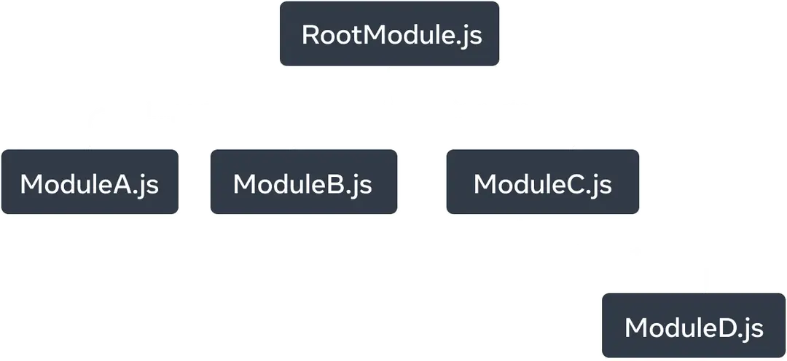

Describing the UI
React is a JavaScript library for rendering user interfaces (UI). UI is built from small units like buttons, text, and images. React lets you combine them into reusable, nestable components. From web sites to phone apps, everything on the screen can be broken down into components. In this chapter, you’ll learn to create, customize, and conditionally display React components.
Your first component
React applications are built from isolated pieces of UI called components. A React component is a JavaScript function that you can sprinkle with markup. Components can be as small as a button, or as large as an entire page. Here is a Gallery component rendering three Profile components:
function Profile() {
return (
<img
src="https://i.imgur.com/MK3eW3As.jpg"
alt="Katherine Johnson"
/>
);
}
export default function Gallery() {
return (
<section>
<h1>Amazing scientists</h1>
<Profile />
<Profile />
<Profile />
</section>
);
}
Importing and exporting components
You can declare many components in one file, but large files can get difficult to navigate. To solve this, you can export a component into its own file, and then import that component from another file:
import Profile from './Profile.js';
export default function Gallery() {
return (
<section>
<h1>Amazing scientists</h1>
<Profile />
<Profile />
<Profile />
</section>
);
}
Writing markup with JSX
Each React component is a JavaScript function that may contain some markup that React renders into the browser. React components use a syntax extension called JSX to represent that markup. JSX looks a lot like HTML, but it is a bit stricter and can display dynamic information.
If we paste existing HTML markup into a React component, it won’t always work:
export default function TodoList() {
return (
// This doesn't quite work!
<h1>Hedy Lamarr's Todos</h1>
<img
src="https://i.imgur.com/yXOvdOSs.jpg"
alt="Hedy Lamarr"
class="photo"
>
<ul>
<li>Invent new traffic lights
<li>Rehearse a movie scene
<li>Improve spectrum technology
</ul>
);
}
If you have existing HTML like this, you can fix it using a converter:
export default function TodoList() {
return (
<>
<h1>Hedy Lamarr's Todos</h1>
<img
src="https://i.imgur.com/yXOvdOSs.jpg"
alt="Hedy Lamarr"
className="photo"
/>
<ul>
<li>Invent new traffic lights</li>
<li>Rehearse a movie scene</li>
<li>Improve spectrum technology</li>
</ul>
</>
);
}
JavaScript in JSX with curly braces
JSX lets you write HTML-like markup inside a JavaScript file, keeping rendering logic and content in the same place. Sometimes you will want to add a little JavaScript logic or reference a dynamic property inside that markup. In this situation, you can use curly braces in your JSX to “open a window” to JavaScript:
const person = {
name: 'Gregorio Y. Zara',
theme: {
backgroundColor: 'black',
color: 'pink'
}
};
export default function TodoList() {
return (
<div style={person.theme}>
<h1>{person.name}'s Todos</h1>
<img
className="avatar"
src="https://i.imgur.com/7vQD0fPs.jpg"
alt="Gregorio Y. Zara"
/>
<ul>
<li>Improve the videophone</li>
<li>Prepare aeronautics lectures</li>
<li>Work on the alcohol-fuelled engine</li>
</ul>
</div>
);
}
Passing props to a component
React components use props to communicate with each other. Every parent component can pass some information to its child components by giving them props. Props might remind you of HTML attributes, but you can pass any JavaScript value through them, including objects, arrays, functions, and even JSX!
import { getImageUrl } from './utils.js'
export default function Profile() {
return (
<Card>
<Avatar
size={100}
person={{
name: 'Katsuko Saruhashi',
imageId: 'YfeOqp2'
}}
/>
</Card>
);
}
function Avatar({ person, size }) {
return (
<img
className="avatar"
src={getImageUrl(person)}
alt={person.name}
width={size}
height={size}
/>
);
}
function Card({ children }) {
return (
<div className="card">
{children}
</div>
);
}
export function getImageUrl(person, size = 's') {
return (
'https://i.imgur.com/' +
person.imageId +
size +
'.jpg'
);
}
Conditional rendering
Your components will often need to display different things depending on different conditions. In React, you can conditionally render JSX using JavaScript syntax like if statements, &&, and ? : operators.
In this example, the JavaScript && operator is used to conditionally render a checkmark:
function Item({ name, isPacked }) {
return (
<li className="item">
{name} {isPacked && '✅'}
</li>
);
}
export default function PackingList() {
return (
<section>
<h1>Sally Ride's Packing List</h1>
<ul>
<Item
isPacked={true}
name="Space suit"
/>
<Item
isPacked={true}
name="Helmet with a golden leaf"
/>
<Item
isPacked={false}
name="Photo of Tam"
/>
</ul>
</section>
);
}
Rendering lists
You will often want to display multiple similar components from a collection of data. You can use JavaScript’s filter() and map() with React to filter and transform your array of data into an array of components.
For each array item, you will need to specify a key. Usually, you will want to use an ID from the database as a key. Keys let React keep track of each item’s place in the list even if the list changes.
import { people } from './data.js';
import { getImageUrl } from './utils.js';
export default function List() {
const listItems = people.map(person =>
<li key={person.id}>
<img
src={getImageUrl(person)}
alt={person.name}
/>
<p>
<b>{person.name}:</b>
{' ' + person.profession + ' '}
known for {person.accomplishment}
</p>
</li>
);
return (
<article>
<h1>Scientists</h1>
<ul>{listItems}</ul>
</article>
);
}
export const people = [{
id: 0,
name: 'Creola Katherine Johnson',
profession: 'mathematician',
accomplishment: 'spaceflight calculations',
imageId: 'MK3eW3A'
}, {
id: 1,
name: 'Mario José Molina-Pasquel Henríquez',
profession: 'chemist',
accomplishment: 'discovery of Arctic ozone hole',
imageId: 'mynHUSa'
}, {
id: 2,
name: 'Mohammad Abdus Salam',
profession: 'physicist',
accomplishment: 'electromagnetism theory',
imageId: 'bE7W1ji'
}, {
id: 3,
name: 'Percy Lavon Julian',
profession: 'chemist',
accomplishment: 'pioneering cortisone drugs, steroids and birth control pills',
imageId: 'IOjWm71'
}, {
id: 4,
name: 'Subrahmanyan Chandrasekhar',
profession: 'astrophysicist',
accomplishment: 'white dwarf star mass calculations',
imageId: 'lrWQx8l'
}];
export function getImageUrl(person) {
return (
'https://i.imgur.com/' +
person.imageId +
's.jpg'
);
}
Keeping components pure
Some JavaScript functions are pure. A pure function:
- Minds its own business. It does not change any objects or variables that existed before it was called.
- Same inputs, same output. Given the same inputs, a pure function should always return the same result.
By strictly only writing your components as pure functions, you can avoid an entire class of baffling bugs and unpredictable behavior as your codebase grows. Here is an example of an impure component:
let guest = 0;
function Cup() {
// Bad: changing a preexisting variable!
guest = guest + 1;
return <h2>Tea cup for guest #{guest}</h2>;
}
export default function TeaSet() {
return (
<>
<Cup />
<Cup />
<Cup />
</>
);
You can make this component pure by passing a prop instead of modifying a preexisting variable:
function Cup({ guest }) {
return <h2>Tea cup for guest #{guest}</h2>;
}
export default function TeaSet() {
return (
<>
<Cup guest={1} />
<Cup guest={2} />
<Cup guest={3} />
</>
);
}
Your UI as a tree
React uses trees to model the relationships between components and modules.
A React render tree is a representation of the parent and child relationship between components.
Components near the top of the tree, near the root component, are considered top-level components. Components with no child components are leaf components. This categorization of components is useful for understanding data flow and rendering performance.
Modelling the relationship between JavaScript modules is another useful way to understand your app. We refer to it as a module dependency tree.
A dependency tree is often used by build tools to bundle all the relevant JavaScript code for the client to download and render. A large bundle size regresses user experience for React apps. Understanding the module dependency tree is helpful to debug such issues.
What’s next?
Head over to Your First Component to start reading this chapter page by page!
Or, if you’re already familiar with these topics, why not read about Adding Interactivity?